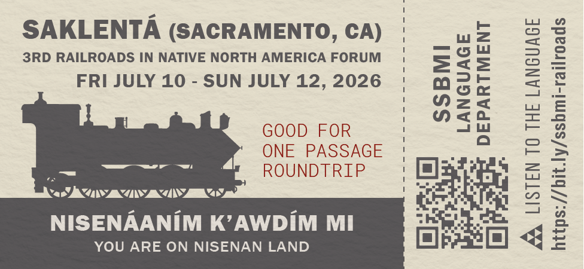
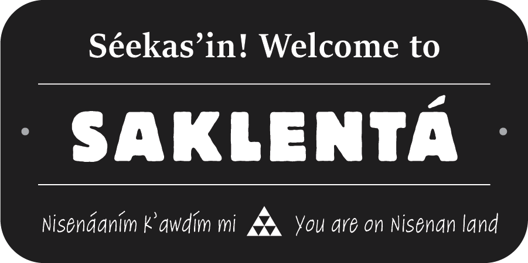
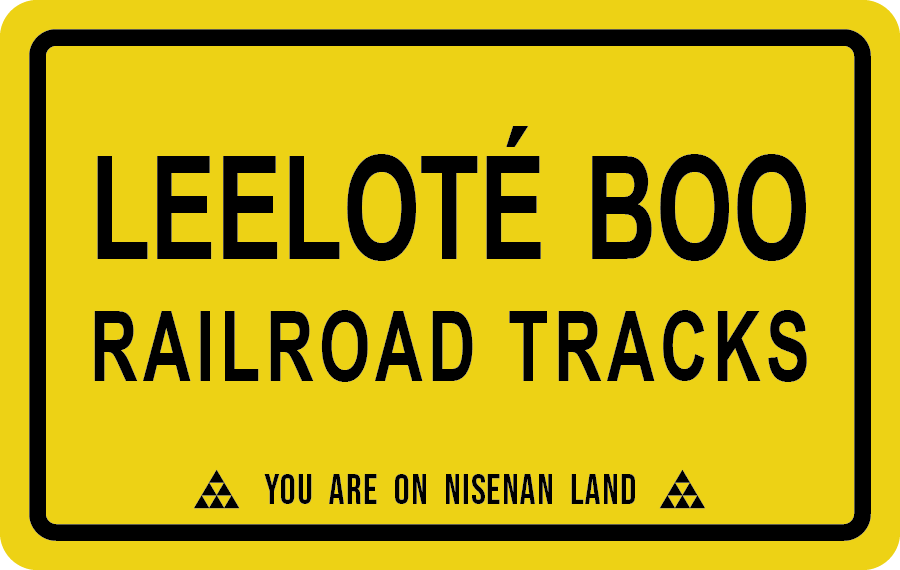

3rd Railroads in Native America Forum
Table of Contents
Do you want to know more?
Séekas’in! The SSBMI Language Department created this webpage to share audio recordings of the Nisenan language found on stickers that we shared at the 3rd Railroads in Native America Forum at the California State Railroad Museum (July 10-12, 2026).
We encourage you to browse this website to learn more about the Nisenan language and the Tribe's language revitalization efforts.
Please contact us at language@ssband.org to inquire about the availability of stickers or other language resources, or to ask other questions.
Stickers + Listen to the language

Saklentá
'Sacramento'
Nisenáaním k’awdím mi.
'You are on Nisenan land.'

Séekas’in!
'Hello!'
Saklentá
'Sacramento'
Nisenáaním k’awdím mi.
'You are on Nisenan land.'

Leeloté boo
'Railroad tracks'
Esak’ábe mi? (Do you know?) Nisenan speakers borrowed the word leelót (railroad) from the English word "railroad", adapting it to sound like a Nisenan word. For example, there are no "r" sounds in Nisenan, so the "r" sounds of the English word are replaced with "l". Similarly, speakers borrowed the name Saklentá from the English name "Sacramento", adapting it to sound like a Nisenan name.